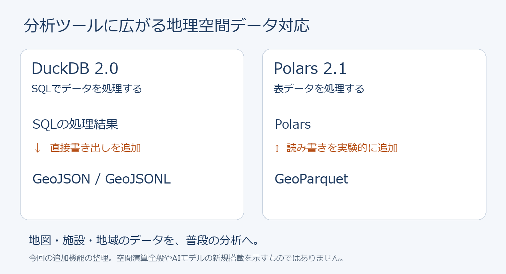
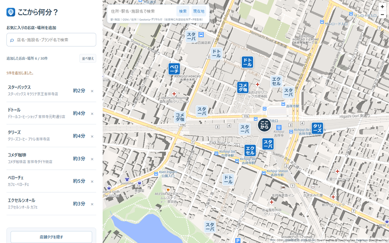

データサイエンスから入った私には、使い慣れたDuckDBやPolarsで地理空間データへの対応が進むのは嬉しい。最近はClaude CodeやCodexに「DuckDBを使って」と頼むことが増え、細かな新機能を追う機会は減った。それでも、こうした更新を知ると使ってみたくなる。地図やPOIの分析でも、引き続き活用していきたい。
駅周辺のPOIや徒歩圏を調べる中で、「いつもの店まで何分か、まとめて分かったら便利そうだ」と思い付き、「ここから何分？」というアプリを作った。少し反応もあり、嬉しく思っている。まだ公開したばかりだが、身近な場所を探す道具として、多くの人に使ってもらえたらと思う。

DuckDB 2.0とPolars 2.1の追加機能を整理した図。
本誌では、地図・位置情報・POIなどの地理空間データを、機械学習やデータサイエンスの手法で分析・活用する領域をGeoAIと呼びます
DuckDBは10月21日、長期サポート版の2.0を公開しました。クラウド上のデータ読み込みを改善し、AIエージェント向けモードも追加。地理空間データでは、SQLからGeoJSONや1行1地物のGeoJSONLへ直接書き出せるようになり、集計結果を地図へ渡しやすくなっています。空間分析そのものは従来から対応しており、今回初めてGIS機能が入ったわけではありません。
CARTOは10月27日、地理空間基盤モデルやAIエージェントを研究する「CARTO AI Lab」を発表しました。地域の特徴を数値で表す埋め込み、その分析手法、分析を実行するエージェントを組み合わせる方針です。「似た地域はどこか」「地域がどう変化しているか」といった問いへつなげ、研究と製品開発の両面で取り組みます。
GeoLibreは10月27日の更新で、分析手順を組むModel Builderに反復処理と条件分岐を追加しました。同じ処理を繰り返したり、条件によって処理を分けたりできるようになります。一度だけの操作から、再利用する分析手順を組み立てる用途へ、表現できる処理が広がりました。
データ分析ライブラリのPolarsは2.1.0で、地理空間データを保存するGeoParquetの読み書きを実験的に追加しました。一般的な表データ処理と地理空間データの接点が広がる更新ですが、空間演算全般に対応したという意味ではありません。
MapLibre NativeのiOS版は、独自のスタイルレイヤーを追加する実験的なCプラグインAPIを導入しました。利用には専用のSwiftパッケージが必要で、今回の更新では最低対応OSもiOS 15.5へ引き上げています。
Googleは一部地域で住所の欠落や誤った言語表示に加え、経路の迂回や道路区間の欠落が生じたと報告しています。10月30日の確認時点で取得できた最新報告は日本時間29日朝のもので、データの巻き戻しと反映を終え、最終検証中としていました。
私のブログでは、吉祥寺駅の500m圏のPOIが計算に使う座標系によって3,481件から3,111件へ変わる例を紹介しました。座標系の入門と、対象範囲と場所を区別するAOI・POIの解説も公開しています。
私が作ったこのアプリは、登録した店や施設への徒歩時間を地図と一覧で確認でき、出発地点を変えるとブランドの近い店舗を探し直すWebアプリです。アカウント登録不要で、OpenStreetMapを使った徒歩20分以内の目安を表示しますが、信号待ちや坂道、混雑などは反映しません。

「ここから何分？」の公開記事掲載画面。背景地図：OpenFreeMap／OpenMapTiles、データ：© OpenStreetMap contributors。表示時間は撮影時の目安です。